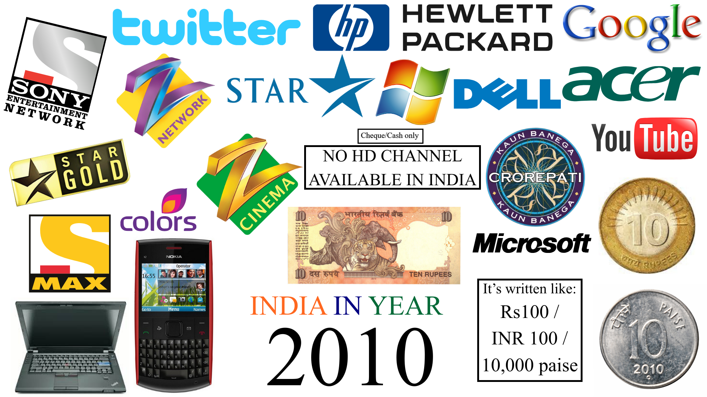
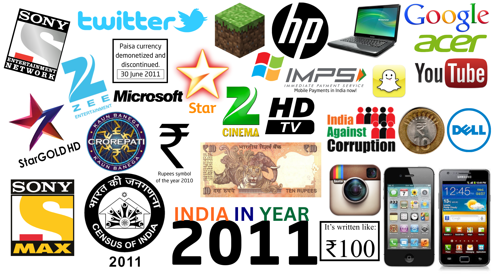
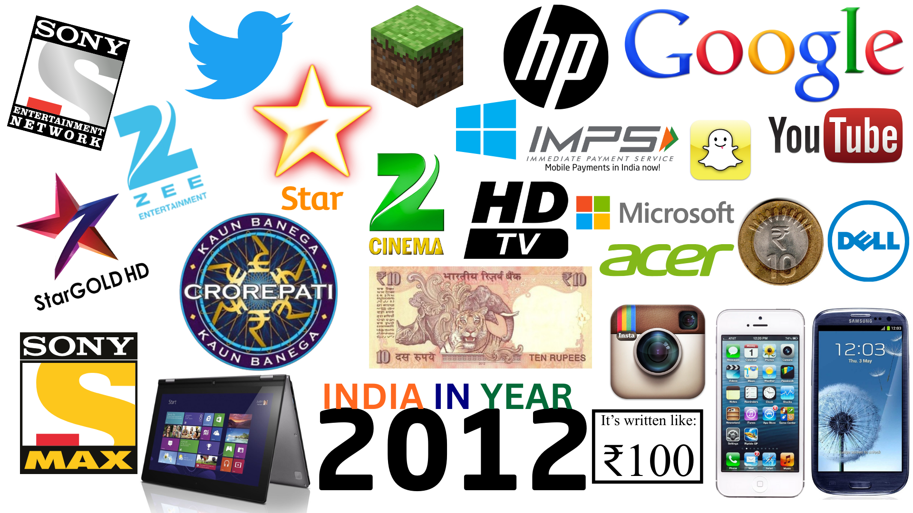

In this post, I will share my thoughts on what India was like in 2010 and 2011.
I have summarised them in the form of collages. Additionally, as a bonus, I have
also prepared a collage for the year 2012. The images also signify what were the
changes or new introductions in that certain year.
The year 2010:
-
Technology:
Keypad phones (Nokia QWERTY), bulky old design laptops
-
Internet & platforms:
Twitter's logo, YouTube still secondary entertainment
-
Television:
SD channels dominate,
explicitly “No HD channel available in India”
-
Payments & money:
Paise still in circulation, cash/cheque culture
-
Brands & design:
TV channels and their holding networks had very old-looking logos.
Star Gold was actually "GOLD".
Laptop brands also used older logos: HP (1979), Dell (1992), Acer (2001).
-
Currency:
The currency was old and did not carry the Rupee symbol.
Only cash or cheques were used. Paise currency was still alive,
symbolised by the 10 paise coin. Suppose you wanted to go on a holiday
for solitude to a hotel—you had to call, prepare a cheque, and wait for
someone to collect it. A very old-fashioned process.
-
Thus, to conclude, 2010 was the last year to feel old and classic in India.
- KBC was not a cultural event yet. Why? It's so because even though KBC got a rave styled redesign, with the introduction of timer, and a new logo, with the start of Season 4 on 11 October 2010, the show played western styled music, which did not make it feel like a cultural event.
The year 2011:
-
HD becomes normal:
Star Gold HD, HD TV branding, Colors HD — HD makes its debut in India
-
Smartphones appear:
iPhone, Samsung Galaxy — touchscreen computing becomes common
-
Social media explosion:
Twitter bird icon, YouTube modernisation, Instagram and Snapchat launches
-
National moments:
Census 2011, Anti-Corruption movement
-
Design language:
Cleaner, more confident branding. HP, Dell, Acer rebrand.
Zee, Sony, and Star also modernise their logos.
-
Currency reform:
Paise discontinued (30 June 2011), ₹ symbol officially adopted.
Notes (23 Sept 2011) and coins (8 July 2011) now carry the symbol.
Payments could now be made via IMPS using SMS or bank apps.
-
This year also marks the start of the 68th tricennial and Generation Alpha.
- KBC Season 5 was launched on 15 August 2011, and with this they introduced Indian styled beats to the music. This made it a more culturally linked program.
-
Thus, to conclude, 2011 was the year of
"RAPID MODERNISATION" — the real turning point.
The year 2012 (bonus):
- Twitter's logo changed
- Introduction of 360-degree laptops
- Microsoft’s new logo after 1987 and 2010
-
India wasn’t “becoming modern” anymore — it had already become modern,
and 2012 refined it further.
Conclusion:
-
India didn’t slowly modernize — it pivoted, and 2011 was the pivot.

India in the year 2010

India in the year 2011

India in the year 2012
© 2025 Niral Bhatt. All rights reserved.